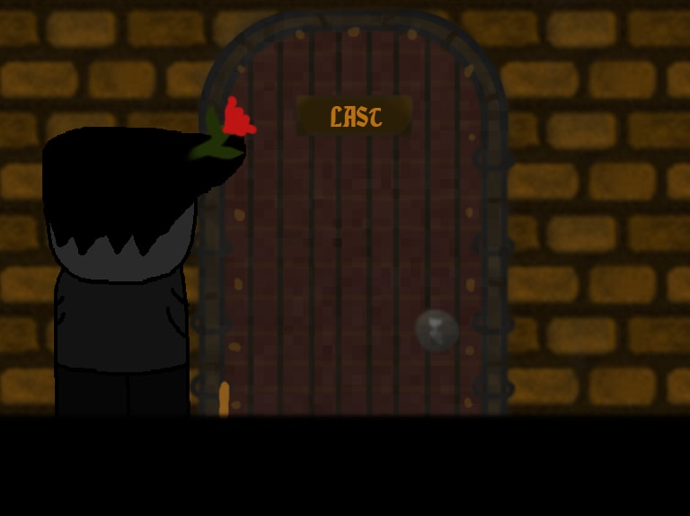

Home
LD36: The Doors

First door was made more than 5000 years ago.
Doors block off, and allow access within an enclosed space.
But for ancient people doors also had mythical meaning.
Someone thought their LAST door would lead to the new life.The others' guess was the endless void.
✏ theme
Ancient Technology
🏅 features
- Top-view game, where every room fits on one screen
- Easy to understand gameplay, with only six buttons
- Deep storyline, even deeper than you think
- Unbelievable plot turns, it's so unbelievable that I can't make a joke
- Five rooms with deadly traps, not that kind of traps, but usual traps
- Gorgeous cutscenes, one of them includes epilepsy warning. This is not a joke
🎮 controls
- Left arrow - move left
- Right arrow - move right
- Up arrow - move up
- Down arrow - move down
- Spacebar - jump
- 'E' - use/interact
🕹 cheats
If you find any level difficult for you to complete - hold CTRL and move your cursor around the screen. The character will be placed on your cursor coordinates.